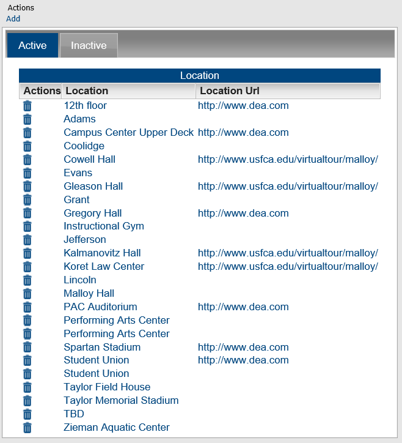
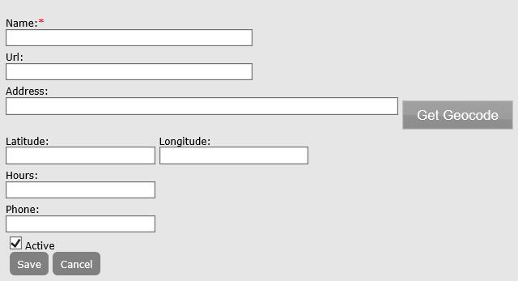

An event location is the location where the event is to take place. For example, if you are managing a calendar for a university’s athletic events, you could set up a list of possible locations for the event, such as the stadium, the field house, the sports arena, the gymnasium, and so on. When you set up a location in Master Calendar, you can also provide a hyperlink for the location. For example, if you are managing a university’s athletic calendar, and you add the football stadium as a location, you can include a URL for a webpage showing a map of the stadium. The Location field for an event can be optional or required, depending upon your Master Calendar parameter settings. This topic guides you in setting up new event locations, activating and de-activating event locations, editing event locations, and deleting event locations.
From the Admin Panel, navigate to Admin > Configuration > Locations. The Locations page opens on the Active tab, which lists all currently active event locations in Master Calendar.

Under Actions, click Add. The Location dialog box opens, where you name the event location, provide a hyperlink, address, hours, or phone information. Users will then be able to select this new location from a dropdown list in the Location field on the Submit Events page.

From the Admin Panel, navigate to Admin > Configuration > Locations. The Locations page opens on the Active tab, which lists all currently active event locations in Master Calendar.
Click Save. Your changes will be applied immediately; activated Locations will appear for selection in the dropdown next to the Location field on the Submit Events page, and de-activated Locations will not.
Additionally, you can edit the Name, URL, Address, Latitutde, Longitude, Hours, and Phone from this screen. Make the necessary edits and click Save.
Click the Delete icon next to the Location you want to delete.
If any sub-locations reference the selected location, a dialog box launches indicating the number of sub-locations that reference it. You must first delete these sub-locations before you can delete the location. To delete these sub-locations, navigate to Admin > Sub-locations. EMS Software recommends reviewing and editing your sub-locations first.
If no sub-locations reference the selected location, a message prompts you to confirm that you want to delete the selected location.
If you delete an active event location, any current events that use this location are not affected. The deletion simply means that going forward, the location is not available for use. You can delete only one location at a time.